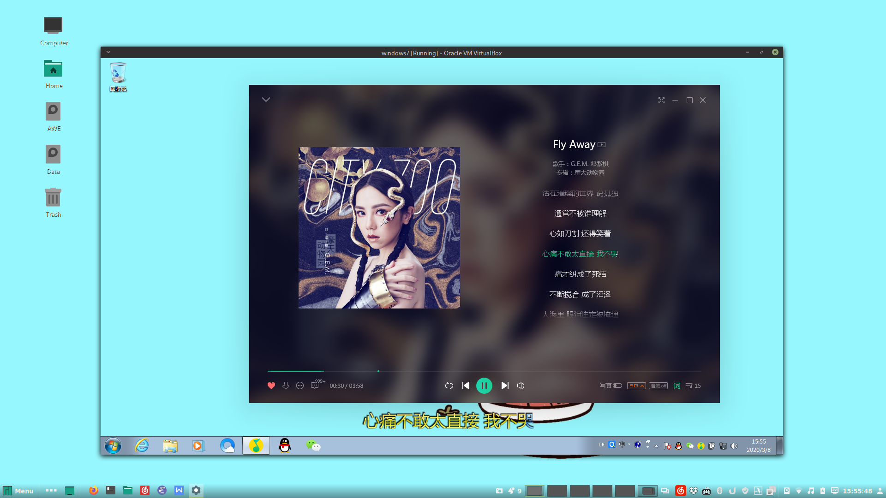

2020 03 我的桌面 record
Posted

My Desktop Environment 2020-03
Software
| 名称 | Link |
|---|---|
| Linux Distribution | Manjaro Architect |
| 桌面环境 | Cinnamon |
| 终端 | Termite |
| Shell | Zsh with oh my zsh |
| 编辑器 | Emacs |
| 浏览器 | Firefox Chrome |
| 音乐 | 网易云音乐 |
| 云盘 | Dropbox |
| 文档 | WPS LaTeX |
| 阅读器 | Zathura |
| 播放器 | Mpv |
| 输入法 | Fcitx-sunpinyin |
| 邮件 | Thunderbird |
| Markdown | Typora |
| Terminal Multiplexer | Tmux |
| 文件浏览器 | Ranger |
| 虚拟机 | Virtualbox |
Preview


Thanks to these guys
- LukeSmithXyz 让我了解到
Linux上的各种软件 - 子龙山人 我的
emacs领路人 - Mike Zamansky’s Using Emacs
emacs学习视频 - 无闻的GoLang视频 学习
Golang